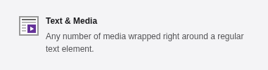
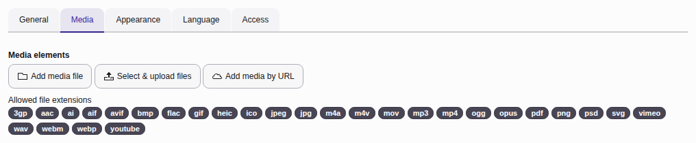

Embedding videos as content into a TYPO3 website

The "Text & Media" content element extends the capabilities of the "Text & Image" content element (introduced in the previous chapter) by supporting a wider range of media types. While "Text & Image" focuses on combining text and static images, "Text & Media" allows you to embed dynamic media, such as videos and audio files.
It also provides the option to embed content from external platforms like YouTube and Vimeo. The specific file types and formats supported (e.g., audio and video) depend on your site's configuration, including any installed extensions that may add support for additional formats. A list of allowed file extensions and pseudo-formats (e.g., YouTube, Vimeo) is displayed below the element selector.
This enhanced functionality makes "Text & Media" a versatile choice for presenting multimedia content alongside textual information.
Tip
There is a large number of third party TYPO3 extensions to display a video player or embed a video from an external source. If one of those is used refer to the manual of the extension in use.
Add a video to a page
If you want to embed a previously uploaded video or upload a new video use the button Add media file. If you want to embed a video from an external source like YouTube or Vimeo, use the button Add media by URL instead.

Note
For technical security reasons the maximal upload size is limited. Images can have large file sizes. If you cannot upload a video yourself, ask your administrator to do it for you or upload it on an external plattform and embed it.
Configure the video
Use the Autoplay setting to specify whether the video should start playing as soon as the page loads.
You can configure various settings for media files (for example, adding a border, setting page position and behavior) just as you would to configure an image.
External video sources and data privacy
Using certain external video sources can have legal consequences concerning data privacy laws in your country.
Talk to your Data Protection Officer (DPO) or legal department. Ask your integrator to install an extension that ensures you can use YouTube without data privacy issues on your page.
Extension b13/twoclickmedia enables you to use the standard "Text & Media" content element while requiring consent from your readers before any data is sent to YouTube.
Other extensions like t3brightside/youtubevideo provide their own content element.